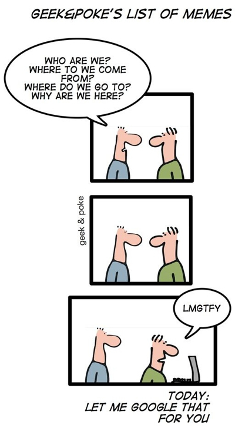

Introduction to Information Retrieval with Lucene
Artur Nowak

The slide deck is accessible at http://synaway.github.com/ir-lucene (source at http://github.com/synaway/ir-lucene)
The objectives
- Get a solid grasp of the basic information retrieval concepts
- Learn what to keep an eye on while implementing a search solution
- Get excited about what is possible with Lucene
- Be ready to explore IR world on your own!
Information retrieval
Information retrieval is the activity of obtaining information resources relevant to an information need from a collection of information resources—Wikipedia
Information need?
—Olivier Widder
What is a query then?
—Google Images
—netcarshow.com
—Ebay
Lucene is an IR library

—Lucene homepage
Lucene history
- Created by Doug Cutting in 1999
- First open source release in 2000 on SourceForge
- Apache Jakarta project from June 2002, top-level Apache project since February 2005
- Numerous ports and bindings exist: C#, C++, Python, Ruby, PHP, Delphi
- Wrapped in Apache Solr, ElasticSearch, Compass, Hibernate Search
- Spun off notable projects, including Nutch, Tika, Hadoop and Mahout
Document

—Google Images

—Google Images
Document is a basic, atomic unit of retrieval
- Documents are typically retrieved by id from the storage (e.g. database)
- All of the content of a document is ranked together
Documents have fields
(defined in the schema)
—Google Images
Precision and Recall
$$\textrm{Precision} := \frac{|Rel \cap Res|}{|Res|}$$
$$\textrm{Recall} := \frac{|Rel \cap Res|}{|Rel|}$$